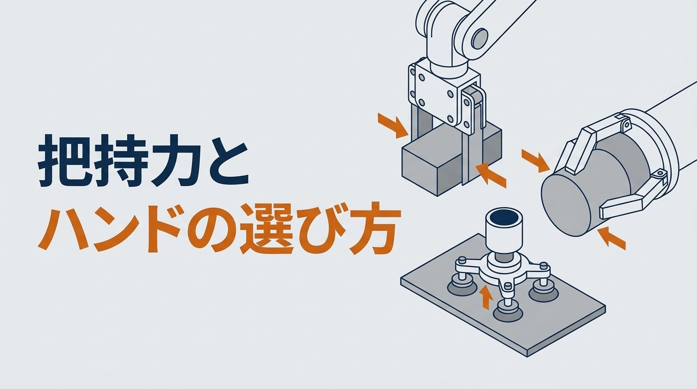
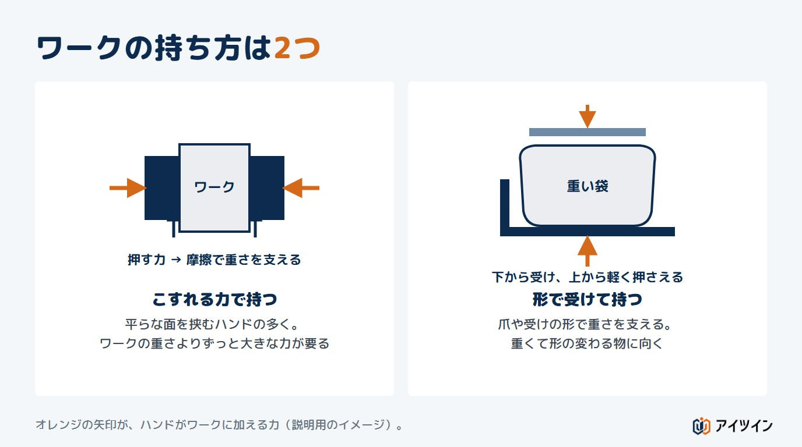
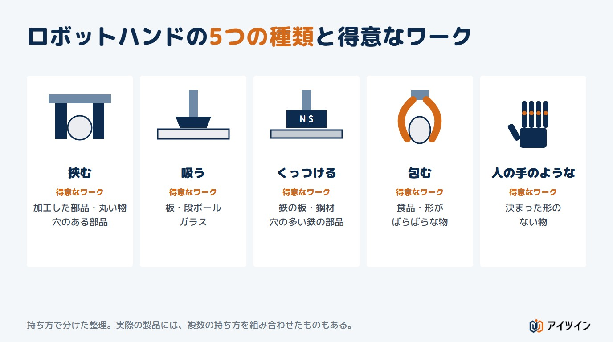
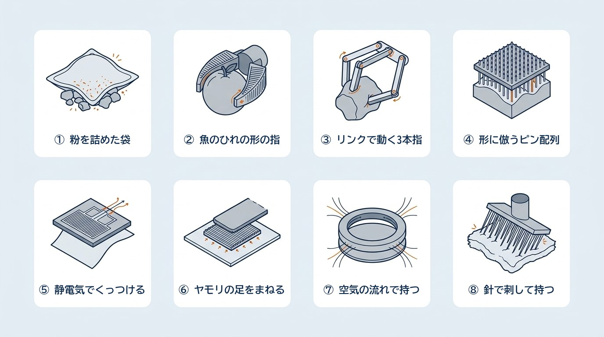
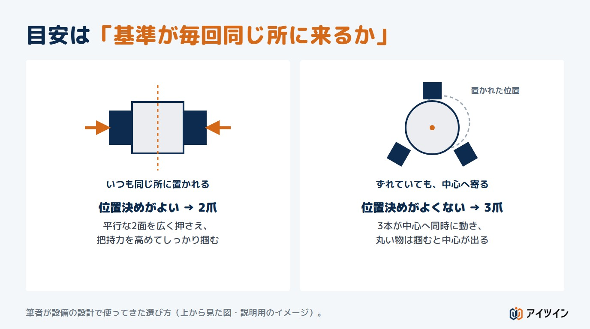
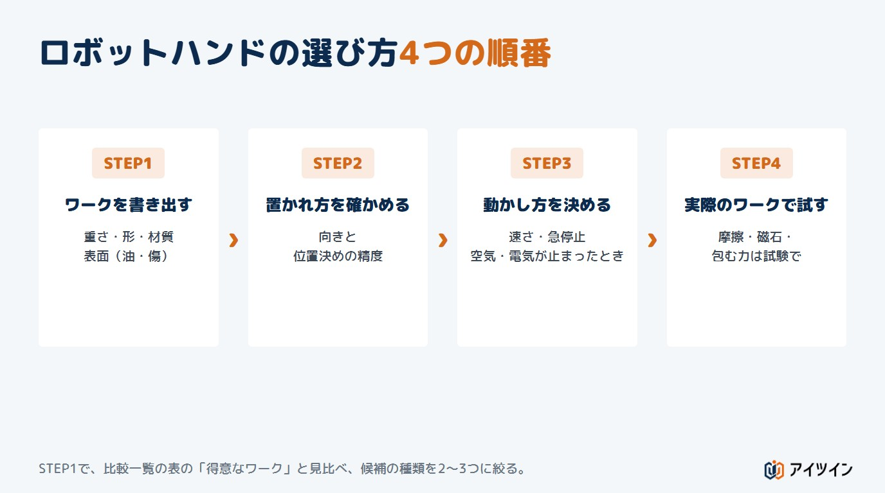

「このワーク、どのハンドでつかめばいいのだろう」「カタログの把持力は、どれくらいあれば足りるのか」。ロボットや自動機でワークを運ぶ設備を考えると、最初にこの2つで迷います。ハンドの種類は多く、同じワークでも、挟む・吸う・下から受けるなど、持ち方はいくつも考えられます。
本記事では、把持力とは何かを整理したうえで、2爪・3爪・真空・磁石・ソフトハンドなどロボットハンドの種類と得意なワークを比較表にまとめます。研究から生まれた世界の変わったハンドも紹介します。後半では、挟むハンドに必要な把持力の計算方法を例題で解説し、設備の設計で筆者が使ってきた、2爪と3爪、エアと電動の選び方を紹介します。条件を入れて試せる計算ツールつきです。
計算例の適用範囲
- 本記事は、挟むハンドの把持力の考え方を、単純な仮定（どの爪も同じ力で押す、摩擦係数は一定）で説明するものです。計算したハンドで安全に持てることを保証するものではありません
- 摩擦係数や加速度は、説明のための仮の値です。実際の値は、ワークと爪の材料・表面、ハンドとロボットの仕様で確かめます
- 人の安全に関わる対策（落下の防止、安全柵、非常停止）は、適用する規格と、機械の危険の見積もりにもとづいて決めます
この記事でわかること
- 把持力の意味と、握力・保持力との違い。「こすれる力」と「形」の2つの持ち方
- ロボットハンドの種類（挟む・吸う・くっつける・包む・人の手のような）と得意なワーク
- 研究から生まれた、世界のロボットハンドの変わった持ち方
- 挟むハンドの把持力の計算方法と例題（外径把持・内径把持）
- 2爪と3爪、エアと電動の選び方と、ロボットハンドを選ぶ4つの順番
把持力とは｜ロボットハンドがワークを落とさずに持つ力
把持力の意味と読み方
把持力（はじりょく）は、ロボットハンドがワークをつかんで、落とさずに持つための力です。「把持」は、手でしっかりつかんで持つことを表す言葉です。設備の仕様では、挟むハンド（グリッパ、チャック）が爪でワークを押す力を指すことが多く、カタログにも「把持力」として載っています。
ワークを持って動かすと、重さに加えて、速さを変えるときの力（慣性の力）もかかります。把持力は、この2つに負けずにワークを持ち続けられるだけの大きさが必要です。急に止まったときや、ワークに油が付いているときは、必要な把持力が大きくなります。
把持力と握力・保持力の違い
握力は、人が手を握る力のことで、主に人の体力の目安として使われます。ロボットハンドの把持力は、ワークをつかむためにハンドが加える力を指すことが多いのですが、爪1本あたりの力か、全部の爪の合計かは、メーカーによって違います。保持力は、つかんだワークを保持する能力を表すときなどに使われ、真空のハンドでは「吸着力」とも書かれます。カタログの数字を比べるときは、その数字が何の力かを、仕様の定義で確かめます。
ワークの持ち方は「こすれる力」と「形」の2つ
ハンドがワークを持つ方法は、大きく2つに分けられます。1つは、爪でワークを両側から押し、爪とワークの間の摩擦（こすれる力）で持つ方法です。平らな面を挟むハンドは、ほとんどがこの持ち方です。もう1つは、爪や受けの形で、ワークの下や段、穴を受けて持つ方法です。重さを形で受けるので、摩擦に頼る量が少なくてすみます。

たとえば、粉の入った重い紙袋のように、重くて形が変わりやすく、表面の弱いワークを考えます。横から挟むだけでは、中の粉が動いて袋の形が変わり、押す力が逃げます。強く挟めば、薄い袋が破れます。こうしたワークは、袋の下にフォークや板の形の受けを差し入れて重さを面で支え、必要に応じて上から押さえたり、横をガイドしたりする持ち方が向いています。袋を積み上げる工程では、この形のハンドがよく使われています。袋の材質や中身、運ぶ速さに合わせて、落下や破れを防ぐ形を決めます。実際には、形で受けながら摩擦でも押さえるなど、2つを組み合わせて持つことも多くあります。
この章のまとめ
- 把持力は、ロボットハンドがワークを落とさずに持つ力。重さと、動かすときの力の両方に耐える大きさが要る
- 握力・保持力・吸着力など、似た言葉は資料ごとに意味が違うので、仕様の定義で確かめる
- 持ち方は「こすれる力で持つ」と「形で受けて持つ」の2つ。重くて形の変わる物は形で受ける
ロボットハンドの種類｜持ち方で5つに分ける
ロボットハンドの種類は、ワークをどう持つかで、挟む・吸う・くっつける・包む・人の手のような、の5つに分けると整理しやすくなります。まずは種類ごとの持ち方と、得意なワークを見ていきます。

挟むハンド｜2爪・3爪、外径把持と内径把持
爪でワークを挟む、いちばん多いハンドです。2本の爪が平行に開閉する2爪と、3本の爪が中心に向かって同時に動く3爪がよく使われます。外から閉じてつかむ外径把持のほか、穴やパイプの内側に爪を入れ、開いて内側から張る内径把持もできます。内径把持は、外側に傷を付けたくない部品や、外からは爪が入らない部品に使います。爪を動かす力は、空気（エア）か、モーター（電動）で作ります。
吸うハンド｜真空パッド
ゴムなどのパッドをワークに当て、中の空気を抜いて吸い付けます。板、段ボール、ガラスなど、平らな面のあるワークが得意です。挟むための爪の動きがいらず、ワークの上からつかめます。空気を通すワーク、穴の多いワーク、凸凹の大きい面は苦手です。計算の方法は「真空パッドの吸着力の計算」の記事で詳しく解説しています。
くっつけるハンド｜磁石
磁石の力で、鉄などの磁石に付くワークをくっつけます。鉄の板や鋼材、穴の多い鉄の部品など、吸うハンドでは空気が漏れるワークにも使えます。磁石には、電気を流したときだけ働くものと、いつも働く磁石を機構で切り替えるものがあります。アルミなど磁石に付かない材料には、基本的に使えません。ステンレスは、種類や加工の状態で磁石への付きやすさが違うため、実際の材料で確かめます。
包むハンド｜ソフトハンド
ゴムなどのやわらかい指や材料を変形させ、ワークの形に合わせて包み込むように持つハンドです。空気で指を曲げるもののほか、ワイヤーで引くもの、機構で曲げるものなど、動かし方はいろいろあり、風船のように膨らんで包むものもあります。食品や、形と大きさがばらばらな物、傷を付けたくない物が得意です。持てる重さや位置の正確さは構造によって違いますが、一般に、重い物や正確な位置で持ちたい物は苦手です。
人の手のようなハンド｜多関節の指で持ち替える
人の指のように関節がいくつもあるハンドです。関節ごとにモーターを持つものや、少ないモーターでワイヤーなどを使って動かすものがあります。さまざまな形の物をつかんだり、持ち替えたりすることを目指していますが、人のように扱うには、構造だけでなく、センサーや制御、物を見分ける仕組みも要ります。構造と制御が複雑で高価になりやすく、工場の決まった作業では、主に研究や特別な用途で使われています。
ロボットハンドの種類のメリット・デメリット比較一覧
| 種類 | 得意なワーク | メリット | デメリット |
|---|---|---|---|
| 挟む（2爪・3爪） | 加工した部品、丸い物、ブロック、穴のある部品（内径把持） | 種類が多く選びやすい。位置を決めてつかめる | 爪をワークの形に合わせて作る必要がある。爪が入るすき間が要る |
| 吸う（真空） | 板、段ボール、ガラス、平らな面のある物 | 上からつかめる。大きく薄い物も持てる | 空気を通す物や凸凹の大きい面は吸い付きにくい。真空が止まると落ちるおそれがあり、真空の保持や監視などの対策をする |
| くっつける（磁石） | 鉄の板、鋼材、穴の多い鉄の部品 | 穴があっても持てる。構造がかんたん | 磁石に付かない材料には使えない。すき間や塗装で力が下がる |
| 包む（ソフトハンド） | 食品、形がばらばらな物、やわらかい物 | 形が違っても持てる。傷を付けにくい | 重い物が苦手。持つ位置がばらつきやすい |
| 人の手のような多関節 | 決まった形のない物 | 持ち替えなど、人に近い動きができる | 構造と制御が複雑で高価になりやすい |
世界のロボットハンド｜研究・開発で生まれた特殊な持ち方
世界では、ほかにもさまざまな持ち方が研究され、一部は製品にもなっています。工場の定番ではありませんが、「この持ち方なら、あのワークを持てるかもしれない」という発想のヒントになります。

| 持ち方 | 仕組み | 向いているもの |
|---|---|---|
| ① 粉を詰めた袋を固める | 粉や粒をやわらかい膜の袋に詰め、ワークに押し当てて形をなじませてから、中の空気を抜いて粒どうしを固めて持つ（粒子ジャミング） | 形が複雑な小物 |
| ② 魚のひれの形の指 | やわらかい骨組みの変形を使い、ワークの形に沿って曲がる指。形と動かし方によって、巻き付くように持つものもある | 果物や形の違う物 |
| ③ リンクで動く3本指 | リンクなどの機構で指の関節を連動させ、少ないモーターで、ワークの形に合わせて指を曲げる | 形がいろいろな部品 |
| ④ 形に倣うピン配列 | 細いピンをたくさん並べ、ワークに押し当てて形に合わせてから、ピンを固定して持つ | 凸凹のある物（ピンの間隔より細かい形は苦手） |
| ⑤ 静電気でくっつける | 電極に電圧をかけ、静電気の力で薄い物や軽い物をくっつける。材質、表面、湿度で力が変わる | 布、紙、薄いフィルム |
| ⑥ ヤモリの足をまねる | ヤモリの足の裏のような細かい構造で、表面にぴたりと付く力を使う。面の状態や向き、汚れで力が変わる | ガラスなどのなめらかで、きれいな面 |
| ⑦ 空気の流れで持つ | ワークとの間に空気を流して圧力の差を作り、ほとんど触れずに持つ。空気の流れの設計と、ワークとの距離が大切 | 薄くて割れやすい板、傷を付けたくない物 |
| ⑧ 針で刺して持つ | 細い針を刺したり引っかけたりして持つ。ワークに穴が開くことや、針が折れることに注意する | 布、断熱材、発泡材など |
どの持ち方にも、持てる重さや、表面の状態による向き不向きがあります。実際に使うときは、ワークで試して確かめます。
この章のまとめ
- ロボットハンドの種類は、挟む・吸う・くっつける・包む・人の手のような、の5つに分けると選びやすい
- 挟むハンドには、外から閉じる外径把持と、内側から張る内径把持がある
- 研究から生まれた変わった持ち方も多く、苦手なワークを持つヒントになる
把持力の計算方法｜挟むハンドの式と例題
ここからは、いちばん多い挟むハンドで、必要な把持力を計算します。こすれる力（摩擦）で持つ場合の式です。
必要な把持力の式
爪1本あたりの押す力 F ＝ m ×（g ＋ a）× S ÷（μ × n）
m：ワークの質量（kg）、g：重力の加速度（9.81m/s²）、a：持ち上げるときの加速度（m/s²）、S：安全率、μ：爪とワークの摩擦係数、n：ワークに触れて摩擦を生む爪の本数
ワークの重さと、持ち上げるときの加速による力を、爪の摩擦で支える式です。どの爪も同じ力で押し、摩擦係数も同じと仮定しています。この式は、上に持ち上げるなど、加速の向きと重力の向きがそろう場合の基本の式です。爪の面に沿って横に動かす場合は、重力と横の加速は向きが直角なので、足すのではなく、g ＋ a の代わりに √（g² ＋ a²）で見ます。爪の面に直角な向きに動かす場合は、片側の爪の押す力が減るので、別に確かめます。摩擦係数は、爪とワークの材料、表面の仕上げ、油の有無で大きく変わるため、低めに見ておきます。
安全率の考え方は、メーカーによって違う
式の安全率 S をいくつにするかには、決まった値がありません。筆者が以前、把持に掛ける安全率を調べたときも、シリンダやハンドのメーカーによって、考えている安全率が違いました。安全率を何倍にするか、加速や衝撃の分をどこまで安全率に含めるかは、メーカーごとに考え方が違うことがあります。安全率はメーカーによって考え方が違うことを前提に、使うハンドのメーカーの選定方法と、そのメーカーが示す安全率の決め方に合わせて計算します。本記事の計算例と計算ツールの安全率は、説明のための仮の値です。
計算例：2kgのアルミのブロックを、2爪で挟んで持ち上げる
2kgのアルミのブロックを、2爪のハンドで挟み、加速度5m/s²で持ち上げる例です。安全率は2、爪とワークの摩擦係数は0.2と仮定します（仮の値・要確認）。
F ＝ 2.0 ×（9.81 ＋ 5）× 2 ÷（0.2 × 2）＝ 148 N（爪1本あたり。ワークの重さ19.6Nの約7.5倍）
急に止まるとき（a ＝ 10）なら 198 N（約10倍）
3爪で挟むなら（a ＝ 5） 99 N（約5倍）
2kgのワークでも、爪1本あたりで重さの7〜10倍の押す力が要ります。摩擦で持つハンドは、ワークの重さよりずっと大きな把持力が必要になる、と覚えておくと、ハンドの選び違いを防げます。3爪にすると1本あたりの力は下がりますが、ワークの形や寸法のばらつきで、3本の負担が均等にならないことがあります。
なお、この計算は「滑らないか」を見る簡単な確かめです。ワークが爪の中で回らないか（重心の位置）、爪や取り付け部の強さ、止まったときにワークを保てるかは、別に確かめます。
内径把持も同じ式で求める
穴の内側から張る内径把持も、こすれる力で持つ点は同じなので、同じ式で必要な力を求めます。気をつけたいのは、ワークの側です。薄い筒や樹脂の部品は、内側から張る力で広がって変形することがあります。必要な把持力に対して、ワークが変形しないかも確かめます。爪の当たる面の幅を広くすると、ワークを押す力の集中を減らせます。
カタログの把持力を確かめるときの注意
ハンドのカタログの「把持力」は、爪1本あたりの力のことも、全部の爪の合計のこともあります。また、取り付け面から掴む点までの距離が長いほど、把持力は小さくなるのが一般的です。エアのハンドでは、使う空気の圧力でも把持力が変わります。計算で求めた力と、カタログの値の定義、掴む点の距離、使う圧力をそろえて比べます（カタログで確かめる）。
吸う・くっつける・包むハンドの力の決め方
吸うハンドは、真空の圧力とパッドの面積から吸着力を求めます。詳しくは「真空パッドの吸着力の計算」で解説しています。磁石のハンドは、ワークとのすき間、ワークの板の厚さ、塗装や油で力が大きく下がるため、メーカーの値をもとに、実際のワークで試して決めます。包むハンドも、ワークの形とやわらかさで持てる力が変わるため、実際のワークでの試験が基本です。
この章のまとめ
- 挟むハンドの爪1本の押す力 ＝ 質量×（g＋a）×安全率÷（摩擦係数×爪の本数）
- 安全率の考え方はメーカーによって違う。使うハンドのメーカーの選定方法で計算する
- 計算例では、2kgのワークでも爪1本で重さの約7.5〜10倍。内径把持も同じ式で、ワークの変形も確かめる
- カタログの把持力は、定義・掴む点の距離・圧力をそろえて比べる。磁石と包むハンドは試験で決める
2爪と3爪の選び方｜位置決めの精度で決める
挟むハンドで最初に迷うのが、2爪にするか3爪にするかです。まずは、それぞれの特徴を比べます。
2爪と3爪の特徴の違い
2爪は、構造がシンプルで価格が手ごろな製品が多く、使われてきた実績も豊富です。ワークの形と置かれる位置が決まっていれば、爪の形をワークに合わせて作り、速く、安定した作業ができます。3爪は、3本の爪が中心へ同時に動く形が多く、球や円筒の形のワークを掴むのに向いています。多少の形や位置のばらつきがあっても、ワークを中心に寄せて掴みやすいのが特徴で、3点で押さえるため、爪の形しだいで、変形しやすいワークの負担を分けられる場合もあります。爪の位置を読み取れる機種やセンサーと組み合わせれば、掴んだ爪の位置から、ワークの大きさを判定することもできます。測定に使う場合は、必要な精度で測れるかを確かめます。
| 2爪 | 3爪 | |
|---|---|---|
| 得意なワーク | 形と置かれる位置が決まったワーク、平行な2つの面があるワーク | 球や円筒の形のワーク、多少の形や位置のばらつきがあるワーク |
| 強み | 構造がシンプルで価格が手ごろ。実績が豊富。速く安定した作業が得意 | 掴むと中心の位置がそろいやすい。爪の位置からワークの大きさの判定もできる |
| 気をつけること | ワークの位置がずれると、掴む位置もずれる | 中心はそろっても、向きまでそろうとは限らない。形が大きく違うワークや、平らな面のワークは掴みにくいことがある |
筆者は設備の設計で、この特徴に加えて、ワークの置かれ方を判断の目安にしていました。

目安は「ワークの基準が、毎回同じ所に来るか」
ハンドでワークを掴んだとき、ワークの基準（位置を決める面や中心）が、毎回同じ所に来るかどうか。筆者は、これを2爪と3爪を選ぶ1つの目安にしていました。掴んだあとに、ワークを決まった位置へ入れる、ほかの部品と組み合わせる、といった作業では、掴んだ位置のばらつきが、そのまま次の作業のずれになるからです。これは筆者の経験からの目安で、実際には、ワークの形、置かれる位置、爪の形、位置決めの精度を合わせて判断します。
位置決めがよいなら、2爪でしっかり掴む
前の工程でワークの位置がよく決まっていて、いつも同じ所に置かれるなら、2爪で掴みます。2爪は、爪の形をワークの面に合わせやすく、平行な2つの面を広く押さえられます。位置決めの精度がよいときは、2爪で把持力を高めて、しっかり掴むのが、筆者の使い方でした。
位置決めがよくないなら、3爪で中心を掴む
ワークの置かれ方がばらつく場合は、3爪にします。3本の爪が中心に向かって同時に動くので、丸い物や筒の形のワークは、掴むと自然に中心へ寄ります。置かれた位置が少しずれていても、爪の開く範囲に入っていれば、掴んだあとのワークの中心は、ほぼ同じ所に来ます。位置決めをハンドに任せられる分、前の工程の精度を緩められることもあります。ただし、ワークの形や置かれた向き、ハンドの精度によっては、中心がそろわないこともあります。前の工程の位置決めがよくない場合でも、カメラで位置を読み取ってから2爪で掴む方法もあります。
この章のまとめ
- 2爪はシンプル・手ごろ・実績豊富で、形の決まったワークを速く安定して掴む。3爪は球や円筒のワークに強く、掴むと中心の位置がそろいやすい
- 2爪と3爪は、掴んだときにワークの基準が毎回同じ所に来るかで選ぶ
- 位置決めがよいなら2爪でしっかり掴み、よくないなら3爪で中心に寄せて掴む
エアと電動の選び方｜大きく軽いワークは電動も
挟むハンドは、爪を動かす力を空気（エア）で作るか、モーター（電動）で作るかでも分けられます。どちらにも向く場面があります。
エアのハンドが向く場面
エアのハンドは、構造がかんたんで、比較的安く、開け閉めが速いのが特徴です。工場に空気の配管があり、爪の位置が「開く・閉じる」の2つで足りる作業に向いています。一方、空気の圧力が下がると把持力も下がるため、圧力の管理が要ります。空気が止まったときに爪が開かないよう、ばねで閉じる力を保つ仕組みや、空気を閉じ込める弁を使うこともあります。
電動のハンドが向く場面
電動のハンドは、爪の位置や掴む力を細かく決められるのが特徴です。大きさの違うワークを1つのハンドで掴み分けたい、爪を大きく開きたい、掴む力を弱めに調整したい、工場に空気の配管がない、といった場面に向いています。電源が切れたときに爪がどうなるか（力が抜けるか、保たれるか）は、機種によって違うため、仕様で確かめます。エアでも電動でも、止まったときにワークを保つ仕組みが故障することもあるため、落ちると危ないワークは、保つ仕組みだけに頼らず、落下を防ぐ受けなどの対策も考えます。
実例：大きいアルミのワークに、ボールねじ入りのアクチュエータを選んだ
筆者が担当した設備に、アルミ製の大きいワークを掴むものがありました。重さはそれほどなかったのですが、サイズが大きかったため、エアのチャックにはせず、モーター付きのアクチュエータを選びました。ボールねじが組み込まれた仕様のもので、モーターの回転をボールねじで直線の動きに変え、爪を動かします。大きいワークでは、重さよりも、爪をどれだけ開くか（ストローク）や、どの位置で止めるかが、ハンドを決める条件になることがあります。
この章のまとめ
- エアは、かんたん・安い・速い。開く・閉じるの2つで足りる作業に向く
- 電動は、爪の位置や力を細かく決められる。大きさの違うワークや、大きく開く作業に向く
- 大きく軽いワークは、重さより、爪の開きと止める位置でハンドが決まることがある
ロボットハンドの選び方｜4つの順番で決める
ここまでの内容を、ロボットハンドを選ぶ順番にまとめます。

STEP1：ワークの重さ・形・材質・表面を書き出す
重さ、大きさ、形、材質（磁石に付くか）、表面（平らな面があるか、油が付くか、傷を付けてよいか）を書き出します。比較一覧の表の「得意なワーク」と見比べると、候補の種類が2〜3つに絞れます。
STEP2：置かれ方と、位置決めの精度を確かめる
ワークがどんな向きで、どれくらいの精度で置かれるかを確かめます。位置のばらつきが大きいなら、3爪や、ワークを中心に寄せる形の爪を考えます。カメラで位置を読み取ってから掴む方法もあります。
STEP3：動かし方と、止まったときを考える
どれくらいの速さで動かし、どこで急に止まるかを決めて、必要な把持力を計算します。あわせて、非常停止のとき、空気や電気が止まったときに、ワークがどうなるかを考えます。落ちると危ないワークは、落下を防ぐ仕組みや、落ちても人に当たらない配置を、機械の危険の見積もりにもとづいて決めます。ハンドとワークの重さが、ロボットの運べる重さに収まるかも確かめます。
STEP4：実際のワークで試す
計算とカタログで候補を決めたら、実際のワークで試します。特に、摩擦係数、磁石の力、包むハンドの持てる力は、計算だけでは決めきれません。ワークの表面のばらつきや、油・粉の付き方も含めて、本番に近い条件で確かめます。
形の複雑なワークは、爪の内側をワークの形に合わせると、向きや位置がそろいやすくなります。アイツインでは、ワークの3Dデータ（ない場合は3Dスキャン）から、ワークの形に合わせた爪を設計し、3Dプリントにも削り出しにも使えるデータでお渡しする設計をお受けします。まずはご相談ください（把持爪の設計の料金）。
この章のまとめ
- ワークを書き出し、比較一覧の表で候補の種類を2〜3つに絞る
- 置かれ方と動かし方から、爪の本数と必要な把持力を決める
- 止まったときのワークの動きを考え、最後は実際のワークで試す
自分の条件で試す｜把持力の計算ツール（概算）
ここまでの計算を、ご自身の条件に置き換えて試せます。爪の本数と掴み方、動かす向きを選び、ワークの質量、摩擦係数、加速度、安全率を入れると、爪1本あたりに必要な把持力が、その場で変わります。使う予定のハンドの把持力（カタログの値）を入れると、足りるかどうかも表示します。初期値は、本記事の計算例（2kgのアルミのブロックを2爪で挟む）と同じです。
把持力の計算（概算）
本記事と同じ単純化（爪でワークを挟み、こすれる力だけで持つ。どの爪も同じ力で押し、摩擦係数は一定。上に持ち上げるときは g＋a、爪の面に沿って横に動かすときは √（g²＋a²) で見る）による、滑らないかの概算です。爪の面に直角な向きに動かす場合、ワークの回転、爪の形でワークを受ける場合の効果、爪の剛性、掴む点の距離による把持力の低下、ワークの変形は計算に含みません。計算の結果は、あくまで参考の値です。ワークを落とさずに持てることを保証するものではありません。安全率の考え方はメーカーによって違うため、使うハンドのメーカーの選定方法でも確かめてください。実際の選定では、ハンドの仕様と、実際のワークでの試験にもとづいて判断してください。
爪と掴み方
ワークと動かし方
動かす向き
結果
| ワークの重さ m × g | N |
|---|---|
| N | |
| 爪1本あたりに必要な把持力 F ＝ 支える力 ÷（μ × n） | N |
| 重さの何倍か | 倍 |
| 全部の爪の合計（カタログが合計の値のとき） | N |
| 使う予定のハンドとの比べ |
初めての条件や、調べる時間がないときは
図面や寸法などの条件を送っていただければ、ロボットハンドの選定と把持力の計算から計算書の作成までお引き受けします。客先にそのまま出せる資料にまとめます（オンライン・全国対応）。図面がなくても、寸法と重さが分かれば概算をお返しします。
把持力でよくある失敗
摩擦係数を高く見積もる
乾いたきれいな面の値で計算し、実際には油や粉が付いていて、ワークが滑る失敗です。摩擦係数が半分になれば、必要な把持力は2倍になります。現場で付く油や粉を考え、低めの値で計算します。
掴む点の距離を見ないで、カタログの値と比べる
カタログの把持力は、決まった掴む点の距離での値です。長い爪を付けて先の方で掴むと、カタログの値より力が下がります。爪の長さと、掴む点の距離での値を確かめます。
空気や電気が止まったときを考えていない
停電や空気の配管の外れで、ハンドの力が抜け、ワークが落ちる失敗です。止まったときに爪がどうなるかを仕様で確かめ、必要なら、力を保つ仕組みや落下を防ぐ受けを付けます。
把持力でよくある質問
把持力と握力の違いは何ですか
握力は人が手を握る力のことで、主に体力の目安です。把持力は、人の手でもロボットハンドでも、物をつかんで持つ力として使われます。設備では、ハンドの爪がワークを押す力を指すことが多く、カタログの数字が何の力かは定義で確かめます。
グリッパの把持力は、どれくらい必要ですか
摩擦で持つ場合は、本記事の式で求めます。計算例では、2kgのワークで、爪1本あたり重さの約7.5〜10倍でした。必要な力は、摩擦係数、加速度、爪の本数、安全率で大きく変わるので、自分の条件で計算します。
重くて薄い袋は、どう掴めばよいですか
横から挟むだけでは、袋の形が変わって力が逃げたり、袋が破れたりします。袋の下にフォークや板の形の受けを差し入れて重さを支え、必要に応じて上から押さえたり、横をガイドしたりする、形で受ける持ち方が向いています。
外径把持と内径把持は、どちらがよいですか
ワークで決まります。外側に爪の入るすき間があり、外側に傷が付いてもよいなら外径把持、外側に傷を付けたくない、または外から爪が入らないなら、穴を使った内径把持を考えます。内径把持では、薄い筒が広がらないかを確かめます。
まとめ
把持力は、ロボットハンドがワークを落とさずに持つ力です。ハンドの種類は、挟む・吸う・くっつける・包む・人の手のような、の5つに分けると整理しやすく、ワークの重さ・形・材質・表面で候補が絞れます。重くて形の変わる物は、摩擦ではなく形で受けて持つことも考えます。
挟むハンドの把持力は、質量×（g＋a）×安全率÷（摩擦係数×爪の本数）で求められ、ワークの重さよりずっと大きな力が必要になります。2爪と3爪は位置決めの精度で、エアと電動はワークの大きさや動かし方で選びます。まずは上の計算ツールで、ご自身のワークに必要な把持力を試してみてください。
参考
・本記事の計算例は、説明のための仮想の条件です。摩擦係数・加速度・安全率は、実際のワークと設備の条件で決めてください
・「2爪と3爪の選び方」「エアと電動の選び方」の実例は、筆者が設備の設計で経験したものです
・世界のロボットハンドの持ち方は、ロボットハンドやソフトグリッパの研究の総説（グリッパの種類と仕組みをまとめた論文）を参考に、一般的な仕組みとしてまとめたものです
・グリッパのメーカーの取扱説明書・技術資料（把持力の選定式、把持力の定義、掴む点の距離による把持力の変化）
・JIS B 8433-1:2015（ロボット及びロボティックデバイス－産業用ロボットのための安全要求事項－第1部：ロボット）。ロボットの安全の参考で、把持力の計算式の出典ではありません
ロボットハンドまわりの設計をご依頼いただけます。設計の外注（設計の代打・治具・架台）の料金を見る ›

この記事を書いた人
株式会社アイツイン 代表 加瀬部 裕紀
製造業に15年在籍し、設備の保全と設計の両方を経験。現場と同じ目線で、計算・設計のお手伝いや、省力化・デジタルツインの導入を支援しています。